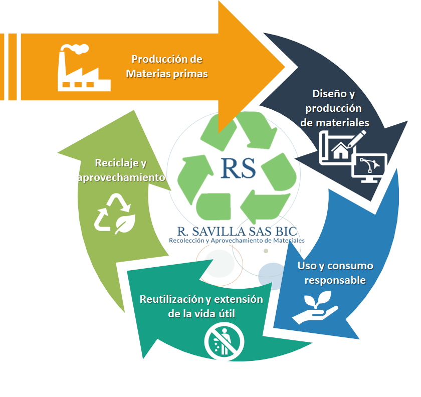
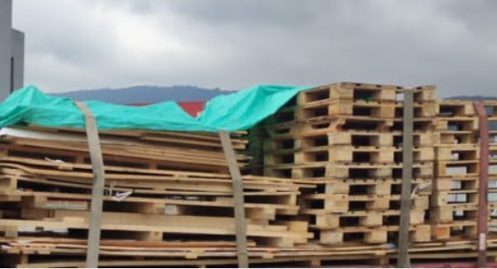
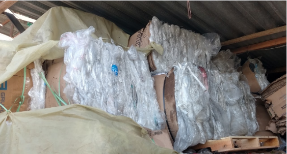
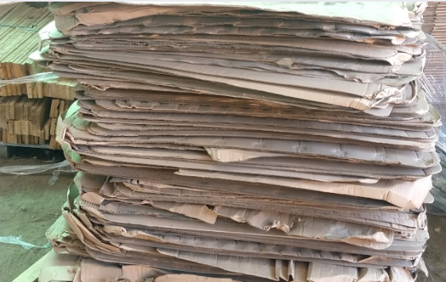
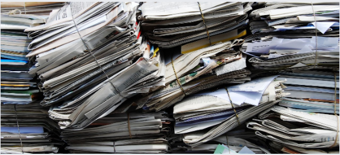

<div class="background pt-7">
    <main class="work-content">
        <h1>Eco-productos</h1>
        <span class="body">
            Fabricamos diferentes tipos de muebles para el hogar, entre ellos: base camas, sofás, comedores, armarios y
            otros.
            A través de la reincorporación de madera proveniente de estibas, desarrollando procesos de economía circular
            como
            nuestro proceso de valor.
        </span>
        <section class="picture-grid">
            <div class="image-wrapper shadow-image flex flex-column justify-content-between">
                
            </div>
            <div class="image-wrapper shadow-image flex flex-column justify-content-between">
                
            </div>
            <div class="image-wrapper shadow-image flex flex-column justify-content-between">
                
            </div>
        </section>
        <span class="body">
            A través de la reincorporación de madera proveniente de estibas, desarrollamos
            procesos de economía circular como nuestro proceso de valor, siendo reconocidos como
            negocios verdes.
        </span>

        <h1>Recuperación de materiales</h1>

        <span class="body">
            En la recuperación y aprovechamiento del material reciclable, contamos con
            la siguiente cadena de valor

            <div class="flex flex-row w-full justify-content-center">
                
            </div>

            Somos una empresa que presta el servicio de recolección y aprovechamiento de residuos sólidos en varias
            ciudades a nivel nacional.
            Generamos certificados de gestión y disposición final.


        </span>
        <h1>Tipo de materiales que recuperamos</h1>

        <div class="grid-container">
            <div class="grid-item">
              <h2>Madera</h2>
              <li>Estibas</li>
              <li>Tablas</li>
              <li>Tablones</li>
              <li>Madera de diferente medida</li>
              
            </div>
          
            <div class="grid-item">
              <h2>Plástico</h2>
              <li>Retal</li>
              <li>Tapas</li>
              <li>Bolsa</li>
              <li>Botellas</li>
              
            </div>
          
            <div class="grid-item">
              <h2>Cartón</h2>
              <li>Plegadiza</li>
              <li>Láminas de cartón</li>
              <li>Cajas de diferentes tamaños</li>
              <li>Tetra Pack</li>
              <li>Polyboard</li>
              
            </div>
          
            <div class="grid-item">
              <h2>Papel</h2>
              <li>Archivo</li>
              <li>Periódico</li>
              <li>Kraft</li>
              
            </div>
          
            <div class="grid-item">
              <h2>Material Metálico</h2>
              <li>Aluminio</li>
              <li>Hierro</li>
              <li>Otros</li>
              
            </div>
          </div>
    </main>
</div>